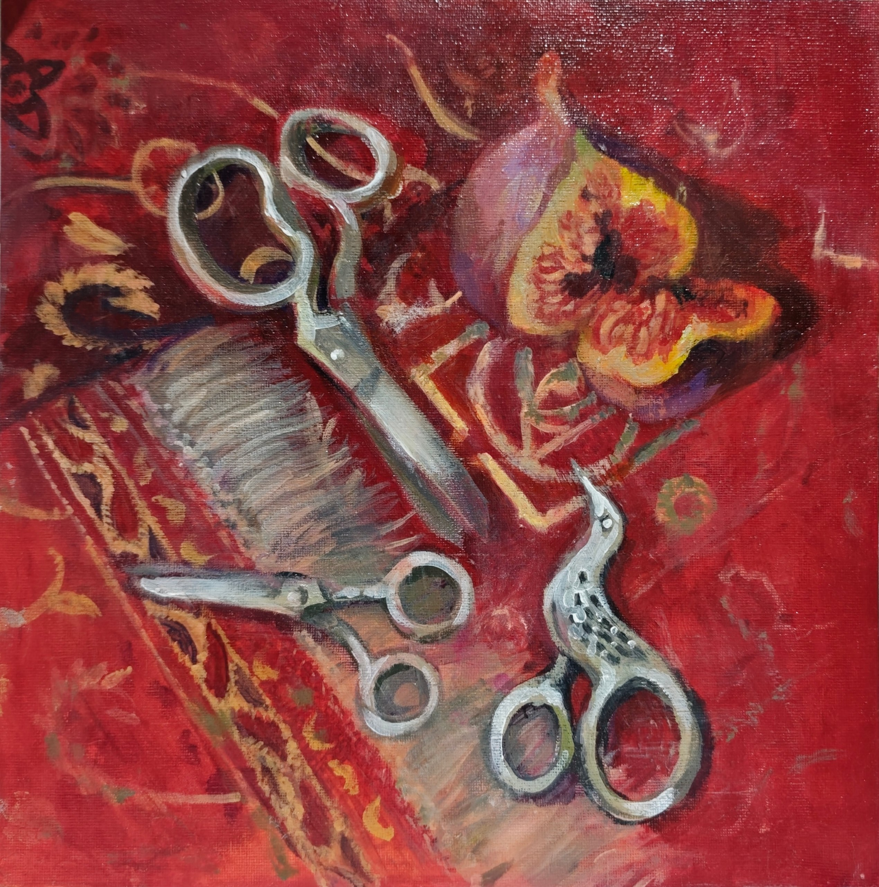
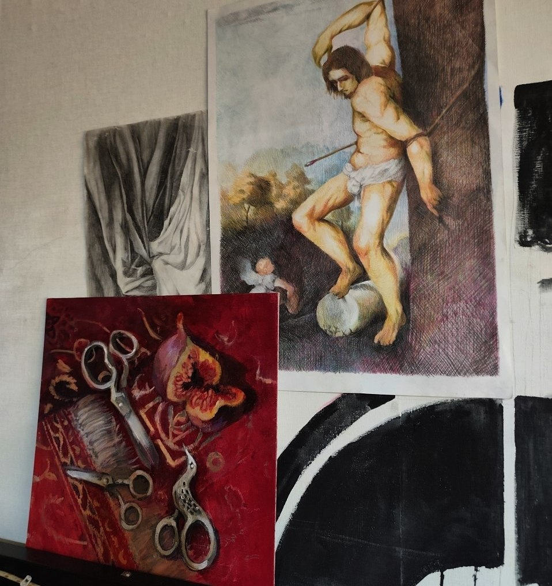
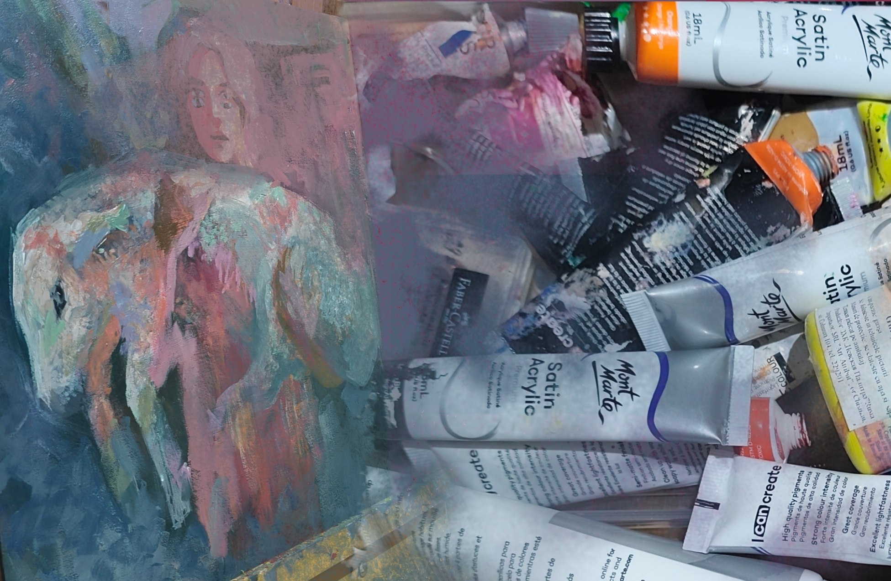

I wish I could share some more traditional artworks. I really love painting with acrylics or crayons, but I only got time to do so recently, when I finished art college as ceramist. I only recently got the time to finish the first naturmorte I did for myself alone.
It’s 12х12 inch on flat canvas. As you see it features a fig fruit, but I won’t elaborate on it’s meaning. I hope someday it finds it’s buyer and gets a chance to hang in somebody’s apartment and become something special for them, though this artwork is very dear to me.

I have a few more works I started, but I didn’t get to finish them yet. Although, all of them are parts of a serie of painting. I will be updating this section as I will be finishing more and more of my traditional art projects. Hang in there :)

© 2026 Auroscurro. All rights reserved.